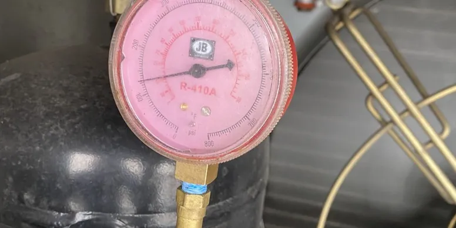
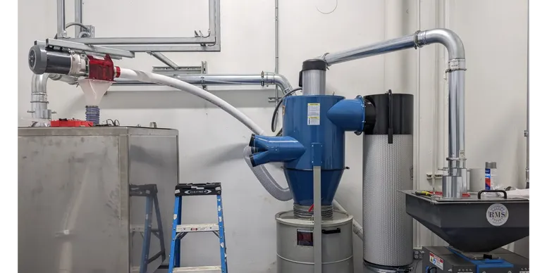
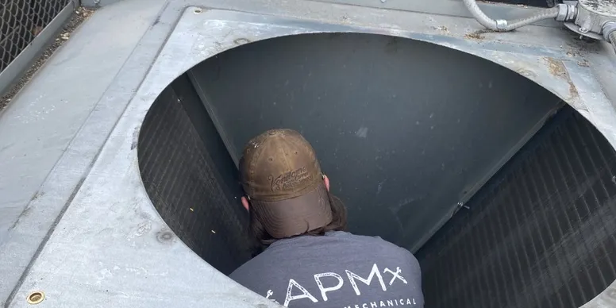
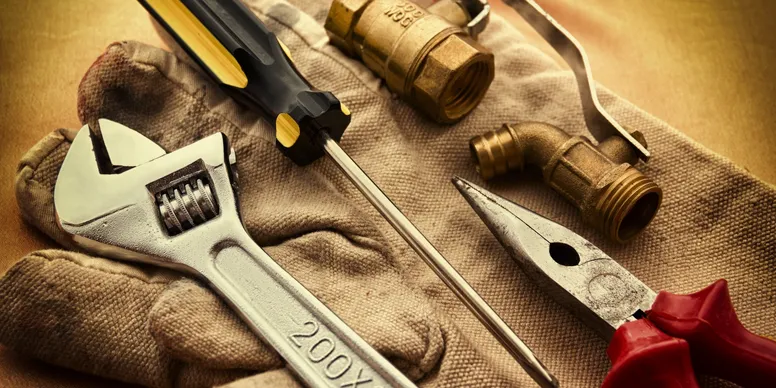
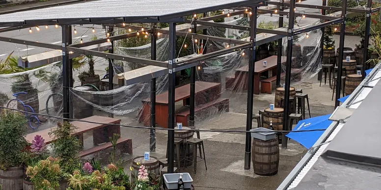

Our Services
We bring to the table a diverse set of skills. Take a look through what we can offer you.
REFRIGERATION
We are a full service refrigeration repair business specializing in glycol chiller repair, walk in cooler repair, glass door unit repair, and kegerator repair. We offer compressor replacement, leak fix, and getting you back on line fast! Specializing in Breweries and Brewpubs
HVAC
We provide full service and repair for HVAC including furnaces, heat pumps, A/C units, Gas packs, heaters, water heaters, and fan units. We also will provide Preventative Maintenance Contracts and do scheduling for you. Specializing in Breweries and Brewpubs
BREWERY BUILDOUT
With several years in the brewing business We can come to your brewery and provide knowledgeable installation services.
PREVENATIVE MAINTENACE
APM specializes in Brewery Preventive Maintenance! We take the stress out of all PM work so your business can focus on all other things that make your business a business.
TAPROOM/RESTAURANT MAINTENANCE
We provide maintenance and installations for for tap rooms and restaurants/brewpubs. We install draft line systems, install glycol chilling systems for line sets. Repair reach in coolers. Also repair ovens, stoves, fryers.
TAPROOM PATIOS
- Sprinklers
- Heaters
- Structures
- Outdoor lighting